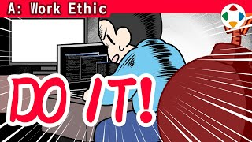
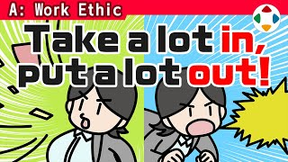
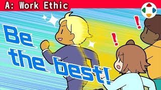
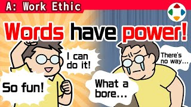
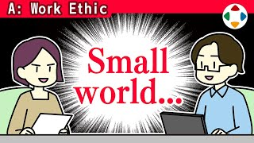
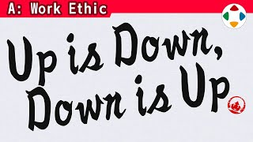

首页 / A 工作态度
- #14:06
做游戏不是玩游戏
Game Development Isn't a Game做游戏是「制造乐趣」的工作，但工作本身不是玩乐；专业人士要灵活回应需求，终极目标是让玩家开心。
- #21:09
演示讲究速度！
Presentations Are All About Speed!演示的秘诀只有一条：速度。削掉赘肉、配简洁的图，在给定时间里讲得密、节奏快。
 #32:24
#32:24你打算去跟玩家解释吗？
Try Telling That to the Player规格对开发方便、对玩家不友好时，问一句「你要挨个跟玩家解释吗」：玩家只在乎好不好玩，方便应优先给玩家。
- #44:15
规格变更
Spec Changes中途改规格应尽量避免但要灵活；发现问题立刻说，把所有手段摆上桌，从短期和长期选出当下最优解。
 #52:43
#52:43企划书的写法
Writing Game Proposals樱井的企划书：PowerPoint，一页一个说明项，一张图配两行字，超过 200 页但像漫画一样翻得快。
- #62:37
企划书要趁热、要快
Prep Your Proposals Hot and Fast先定大纲和项目，一口气做成文档；不要罗列意图、图表、调研和 Plan B；趁热情高时写完，传达魅力的责任在企划者。
 #73:28
#73:28辛苦会忘，作品会留！
You'll Forget the Hardship, But the Game Will Endure!开发辛苦而朴素，但玩的人越多回报越大；辛苦会被忘记，作品和失误会一直留着，所以尽量不留遗憾。
 #82:30
#82:30总监要有个性
Directors Need to Be Unique能干的总监共同点不多，硬要说就是对细节敏锐、看到的和别人不同；同时需要平衡感和表达力。

#92:01总之，现在就做！
Just Do It Already!没干劲、无从下手时，唯一的办法就是马上动手；干劲会随后到来，成功靠出手次数。
 #104:22
#104:22我是如何坚持写专栏的
How I Stuck With My Column《周刊 Fami 通》专栏连载 18 年 9 个月、640 回；能坚持是因为擅长输出、不花太多时间、不太在意——习惯要轻松看待。
 #112:04
#112:04不要依赖「Plan B」
Don't Rely on a "Plan B"企划书里不要写「A 也行、B 也行」：想透后只给出你认为最好的方案，再结合团队建议做修正。
 #124:07
#124:07分岔的口味
Branching Tastes人的价值观会随成长像树枝一样分岔；分岔前的「树干」市场最粗，做游戏要俯瞰市场、有意识地选择瞄准哪里。

#132:22多输入，多输出
Broad Input, Broad Output尤其对总监而言，把输入（外界刺激）和输出（自我发信）都做「粗」、养成习惯，是做好工作的关键。
 #142:44
#142:44把内压保持在高位
Keep Your Internal Pressure High从零写企划时先别跟人说：忍住、憋着写，让内压把点子压浓；别用聊天或 SNS 泄压。
- #152:41
不要什么都靠多数表决
The Majority Shouldn't Always Rule作品内容不该靠多数表决：多数选出的是最稳妥也最平庸的；应由把握全貌的核心人物负责决定——前提是平衡感和充分的信息。
 #162:33
#162:33暗示的力量
The Power of Suggestion比起「朝目标前进」的暗示，「从某物逃开」的暗示（如逼近的截止日期）往往更有效。
- #172:58
坚守你的概念
Staying True to Your Concept概念是决定游戏魅力方向的核心，像灯塔的光；开发中途别改方向，至少总监要随时看清它，才能充分利用团队的成果。

#183:23竞争与丰富
Competition and Abundance想做游戏的人极多，竞争激烈且还要和过去的作品竞争；但站在玩家角度，这意味着可以从海量作品中自由挑选——竞争中也在相互支撑。

#192:47说出口，就可能成真
Say It, and It Might Come True说出口、想过的话会塑造自己的姿态；负面情绪也可以变成改进的具体燃料——行动的人赢。
- #203:09
回声室效应
Echo ChambersSNS 上只看到赞同的声音，会自我强化、看不到其他意见；做游戏时要能客观看待，但鲜明的偏向个性也有价值，最终要取得平衡。
 #212:45
#212:45想不出点子的时候
When Ideas Won't Come先定义问题的「主题」，然后在脑中大量试错、不放过细小的线索并深挖；先求数量，筛选放在后面。

#222:47千万别吵架
Never Get Into Fights行业很小，今天的同事可能明天又撞上；别吵架、别说坏话，讨厌会回旋镖；可直说建设性意见，但空气要自己造。

#233:10上即是下，下即是上
Up is Down, and Down is Up总监、制作人、领导并不比员工「高」：指示从上往下流，但实际是从下往上请求大家工作；无论立场如何，都要对周围的人保持敬意。